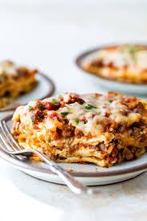

Lasagna
Home
Description: Lasagna
Follow this recipe for the most richly indulgent, thinly layered lasagna.
Ingredients
- One (1) lb wavy lasagna noodles
- Two (2) 24oz jar red sauce of your choice
- One (1) lb ground beef, cooked and drained
- One (1) 15oz container ricotta cheese
- Four (4) cups mozerella cheese, shredded
- Half (1/2) cup parmesan cheese, grated
- Two (2) eggs, lightly beaten
Steps
- Preheat oven to 375F
- Cook lasagna noodles according to package, drain and separate
- Combine cooked beef and 1 1/2 jars sauce in large saucepan
- Combine eggs, ricotta, 3 1/2 cups mozzarella, and Parmesan in large bowl
- Grease 9x13 inch baking dish with cooking spray. Spread 3/4 cup sauce over the bottom of the baking dish
- Place 3-4 lasagna noodles over the bottom, slightly overlapping. Spread half of the cheese mixture over noodles and cover with 1/2 of the meet sauce. Repeat layers. Cover last layer with remaining noodles and sauce. Sprinkle with remaining mozzarella cheese
- Cover with foil and bake for 30 minutes. Remove foil and bake an additonal 10 minutes. Let stand around 10 minutes before serving